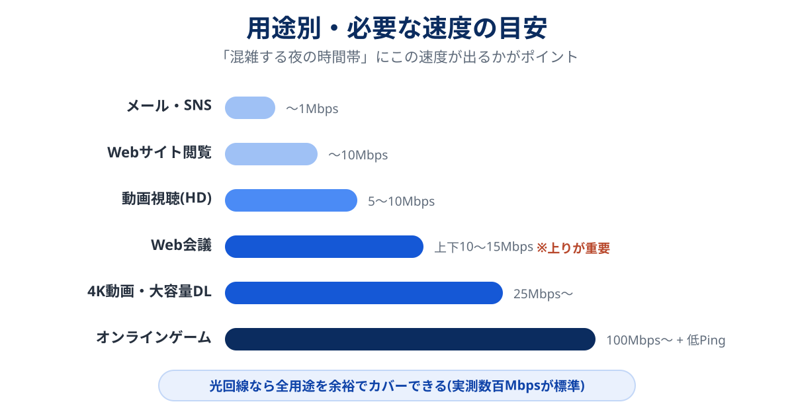

「あ、〇〇さん固まってます」「すみません、聞こえてなかったです」。Web会議のこのやりとり、当事者になるとかなりのストレスですし、商談や面接なら実害も出ます。
この記事では、会議中にすぐできる応急処置と、二度と起こさないための切り分け→根本対策を分けて解説します。犯人は「回線」「Wi-Fi」「PC」の3層のどれかにいます。
いま会議中なら:カメラをオフ → 他のアプリを閉じる → ダメならスマホのテザリングに切り替え。
再発防止なら:速度測定と有線接続テストで犯人を特定してから対策を。有線でも遅い→回線の問題(乗り換え検討)、有線なら速い→Wi-Fi(ルーター)の問題です。
スマホはどれ?上りに強い独自回線:auひかりのエリアを確認する公式サイトへ →PR・エリア判定は無料で、申し込みにはなりません
【会議中】30秒でできる応急処置
効果の大きい順です。上から試してください。
- 自分のカメラをオフにする:映像は音声の何倍も帯域を食います。音声さえ通れば会議は成立します
- 他のアプリ・ブラウザのタブを閉じる:クラウド同期(OneDrive等)や動画タブが裏で帯域を奪っていることは多いです
- 家族の動画・ゲームを一時停止してもらう:同じWi-Fiの帯域は取り合いです(二人とも在宅勤務の家庭で回線を選び直すときの考え方は二人暮らしのWi-Fiの選び方で解説しています)
- スマホのテザリングに切り替える:自宅回線と携帯回線は別物なので、切り替えれば大抵復活します。「いざという時はテザリング」を覚えておくだけで心の余裕が違います
そもそもWeb会議に必要な速度は?

HD画質の会議で上下10〜15Mbpsあれば十分です。つまり「平均では足りているのに途切れる」=瞬間的な低下や不安定さが犯人ということ。そしてもう1つ重要なのが、自分の声と映像を送る上り(アップロード)。下りは速いのに上りが細い環境(集合住宅のVDSLやモバイル回線)では、「相手の声は聞こえるのに、自分の声だけ途切れて聞こえている」現象が起きます。
会議ツール別の推奨帯域(各社公式)
3大ツールの公式ヘルプに載っている数字を並べました。単位はMbps(1Mbps=1,000kbps)で、いずれも参加者1人あたりの目安です。
| ツール | 音声のみ | ビデオ(720p前後) | ビデオ(1080p) |
|---|---|---|---|
| Zoom | 0.06〜0.08 | 1対1:上下1.2 / グループ:上り2.6・下り1.8 | 上り3.8・下り3.0 |
| Microsoft Teams | 推奨0.058(最低0.01) | 推奨 1対1:上下1.5 / 会議:上り2.5・下り4.0 | 最高品質で上下4.0 |
| Google Meet | 上下0.1 | 上下 最大1.7 | 上下 最大3.6 |
※ 2026年10月時点の各社公式ヘルプの記載。Teamsは「推奨」「最高のパフォーマンス」の区分、Meetは小規模な組織・個人向けの上限目安。ツール側は回線が細いと自動で画質を下げるので、実際の消費はこれより少なくなることが多いです。
どのツールも、1080pのビデオ会議でも上下4Mbps前後に収まります。それなのに上で「10〜15Mbps」としているのは、会議中も家族の動画やクラウド同期が同じ回線を使うことと、夜の混雑で速度が瞬間的に半分以下へ落ちることを見込んだ余裕です。逆に言えば、測定で上下10Mbps以上出ているのに途切れるなら、足りないのは速さではなく安定性(遅延・ジッター・パケットロス)のほうです。
遅延については、Googleが管理者向けヘルプで「Googleとの往復の遅延が100ミリ秒未満で映像品質が最も良くなり、300ミリ秒以上で品質が落ちる」と目安を示しています。速度測定のPing(応答時間)が普段は20〜30ミリ秒なのに、会議の時間帯だけ100ミリ秒を超えるなら、混雑か自宅内のWi-Fiが揺れているサインです。
症状から原因の当たりをつける早見表
「途切れる」と一口に言っても、どう途切れるかで疑う場所が変わります。切り分けの前に、自分の症状がどれに近いかを見てください。
| 症状 | まず疑う場所 | 最初の一手 |
|---|---|---|
| 相手の声は聞こえるのに、自分の声だけ途切れると言われる | 上り(アップロード) | 速度測定で上りを確認。VDSLマンションやモバイル回線は上りが細くなりやすい |
| 相手の映像が固まる・カクカクする | 下りか、自宅のWi-Fi | ルーターに近づくか有線でつなぎ、改善するか見る |
| 声がロボットのようになる・数秒おきに途切れる | パケットロス・ジッター(通信の揺れ) | 2.4GHzから5GHzへ。電子レンジや中継機の位置も確認 |
| 毎日、夜や昼休みなど同じ時間帯だけ悪い | 回線の混雑 | その時間帯に有線で測る。IPv6(IPoE)に対応しているか確認 |
| 画面共有を始めると落ちる・PCが熱くなる | PCの処理能力 | タスクマネージャーでCPU使用率を見る。不要なタブとアプリを閉じる |
| 会社のPCだけ遅く、私物の端末は快適 | 会社のVPN・セキュリティソフト | 下の「会社のVPN経由で遅いとき」へ |
| 会議の途中で数十秒〜数分まるごと切れる | 回線の瞬断・ルーターの不調 | ONUとルーターのランプを確認。頻発するなら機器か回線の交換を検討 |
複数の症状が重なっているときは、表の上から順に潰していくと無駄がありません。上りの細さとWi-Fiの揺れが同時に起きている家庭はよくあり、片方だけ直して「変わらなかった」と判断してしまうのがいちばんもったいないパターンです。
【会議後】5分でできる犯人の切り分け
-
会議する時間帯に速度を測る
Speedtest等で下り・上り・Pingを記録。上下10Mbps未満やPing 50ms超が頻発するなら回線層が怪しいです。昼と夜で差が大きい場合は混雑の影響。
-
LANケーブルで直結して再測定
有線で速い→Wi-Fi(ルーター)が犯人。有線でも遅い→回線が犯人。この1手で対策の方向が確定します。ノートPCにLANポートがなければUSB-LANアダプタ(1,000円台)で。
-
別のデバイスでも試す
スマホでは快適なのにPCだけ遅いなら、PC側(常駐アプリ・古い無線規格・セキュリティソフト)の問題の可能性が高いです。
3つのツールとも、会議中の通信状態を確かめる画面を持っています。速度測定は「その瞬間」の値ですが、こちらは会議中に実際どうだったかが分かります。
- Zoom:設定画面の「統計情報」。音声・ビデオごとに遅延、ジッター、パケット損失が表示されます
- Microsoft Teams:会議中の「…(その他)」メニューにある「通話の正常性」。ネットワークや音声・ビデオの状態を確認できます
- Google Meet:「その他のオプション」の「トラブルシューティングとヘルプ」。ネットワークの安定性とCPU負荷の推移がグラフで出ます
メニュー名はアプリのバージョンで変わることがあります。パケット損失が数%出ている、Meetのグラフでネットワークが赤くなっている、といった記録があれば、回線事業者や社内の情報システム担当に相談するときの材料にもなります。
原因別の根本対策
犯人が「Wi-Fi」だった場合(有線なら速い)
- ルーターの置き場所を変える:床置き・棚の奥・水槽や電子レンジの近くはNG。部屋の高くて開けた場所へ
- 5GHz帯に接続する:SSID末尾が「-5G」「-A」等のほう。2.4GHz帯は干渉だらけです
- 5年以上前のルーターは買い替え:Wi-Fi 6対応機で数千円〜。体感が変わります
- 仕事部屋が遠いなら中継機かメッシュWi-Fiを検討
犯人が「回線」だった場合(有線でも遅い)
- IPv6(IPoE)接続に切り替える:契約中の回線が対応していれば無料。夜の混雑に効きます
- マンションで夜だけ遅いなら配線方式を確認:VDSL方式なら構造的な問題です。マンション回線の記事で確認方法から解説しています
- モバイルWi-Fi・無料ネットで仕事をしているなら、光回線への切り替えが根本解決:Web会議が生命線の働き方なら、ここはケチらない方が精神衛生上も安い買い物です
犯人が「PC」だった場合(このPCだけ遅い)
- 会議前に再起動し、不要な常駐アプリを止める
- クラウド同期(OneDrive・Googleドライブ等)を会議中は一時停止
- ブラウザ版ではなくアプリ版の会議ツールを使う(負荷が軽いことが多い)
会社のVPN経由で遅いとき
会社支給のPCでは、通信がいったん会社のVPN(暗号化した専用の経路)を通ってからインターネットに出ていくことがあります。この場合、自宅の回線が速くても、VPNの出口が混んでいると会議だけ遅くなることがあります。私物のスマホやPCでは快適なのに、会社のPCだけ途切れるなら、まずこれを疑ってください。
Microsoftは、Teamsの通話や会議の通信をVPNに通さず直接インターネットへ出す「スプリットトンネル」を推奨しています。VPNはリアルタイムの音声・映像向けに設計されていないことが多く、遠回りの経路で遅延やジッターが増えるためです。
- 自分でVPNを切らない:会社の規程違反になることがあります。設定を変えられるのは情報システム担当です
- 伝えるときは事実をそろえる:「私物の端末では快適」「会社PCは有線でも遅い」「会議ツールの通信状況で遅延やパケット損失が出ている」の3点があると話が早く進みます
- 会議だけブラウザ版・スマホアプリで参加できるか確認する:社内ルールで許されていれば、当日の応急処置になります
自宅のルーター側で見直すべき項目は、在宅勤務のセキュリティで見るルーター設定7項目にまとめています。
テザリングで乗り切るときの通信量
応急処置のテザリングは確実ですが、スマホのデータ容量を使います。上の公式の推奨帯域から、1時間あたりの最大量を計算すると次のとおりです(上りと下りの合計。ツールは回線に合わせて画質を下げるので、実際はこれより少なくなることが多いです)。
| 参加のしかた(Zoomの推奨帯域で計算) | 上下の合計 | 1時間あたり | 月20回(1時間)なら |
|---|---|---|---|
| 音声のみ | 約0.16Mbps | 約70MB | 約1.4GB |
| グループ会議・標準画質 | 約1.6Mbps | 約0.7GB | 約14GB |
| グループ会議・720p | 約4.4Mbps | 約2.0GB | 約40GB |
| 1080p | 約6.8Mbps | 約3.1GB | 約61GB |
※ 計算式:Mbps × 3,600秒 ÷ 8 = MB。Zoom公式の推奨帯域(2026年10月確認)を上限として使った目安です。
カメラをオフにして音声だけで参加すれば、1時間でも100MBに届かない計算です。たまの緊急避難なら20GB前後のプランでも十分ですが、毎日の会議をテザリングで続けると、カメラありで月数十GBになります。また、無制限プランでもテザリングだけ別の上限が決められていることがあります。続けるならテザリングは固定回線の代わりになるかで条件を確認してから決めてください。動画の視聴も含めた通信量は動画の通信量の早見表で計算できます。
Web会議に強い回線を、料金・実測・セット割で比較できます。
上りに強い独自回線:auひかりのエリアを確認するWeb会議・配信向き・提供エリアは住所で判定よくある質問
Web会議に必要な速度は?
会議中に固まったら、まず何をすべき?
ルーターと回線、どちらを先に見直すべき?
会社のPCだけWeb会議が途切れます。原因は何ですか?
テザリングでWeb会議をすると何GB使いますか?
まとめ:切り分けてから、お金と時間を使う
- 会議中はカメラオフ→アプリ整理→テザリングの3段構え
- 再発防止は「時間帯別の実測」と「有線テスト」で犯人特定から
- Wi-Fiが犯人ならルーター対策(数千円)、回線が犯人なら乗り換えが根本解決
- マンションで夜だけ遅いなら配線方式の確認を最優先で
- Zoom・Microsoft Teams・Google Meet 公式ヘルプの推奨帯域(下記)
- Zoom サポート:Zoom のシステム要件(帯域幅)(2026年10月確認)
- Microsoft Learn:Teams 用に組織のネットワークを準備する(帯域幅要件・スプリットトンネル VPN)(2026年10月確認)
- Google Workspace 管理者ヘルプ:Meet のネットワークを準備する(2026年10月確認)
- Google Workspace 管理者ヘルプ:Meet のネットワーク・音声・動画の問題のトラブルシューティング(遅延の目安)(2026年10月確認)